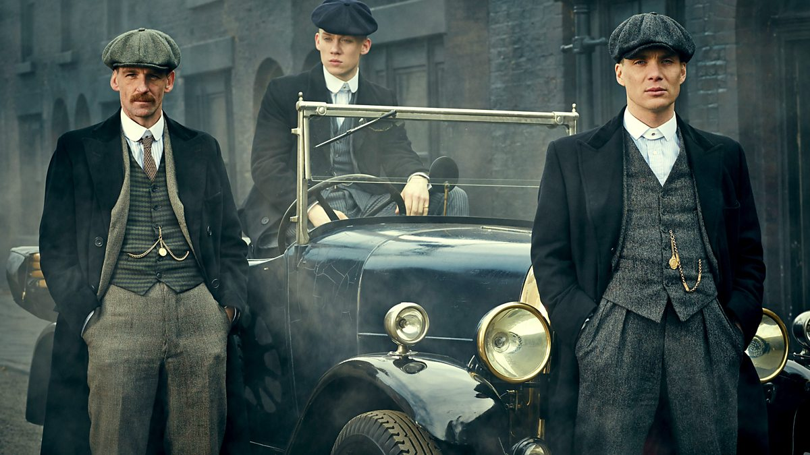
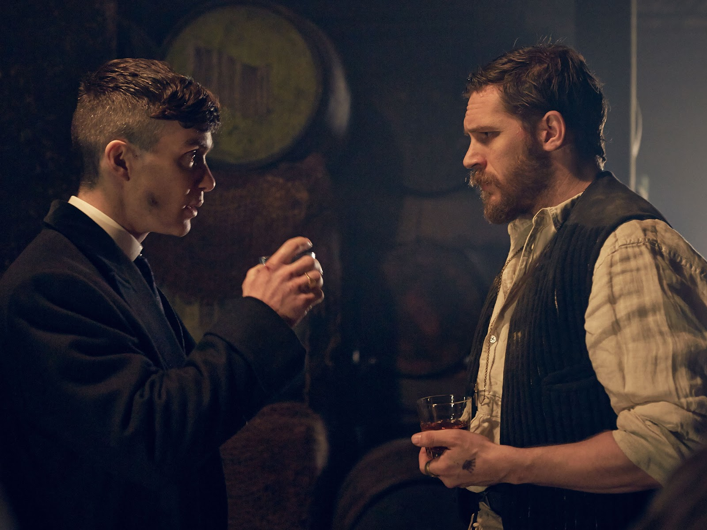
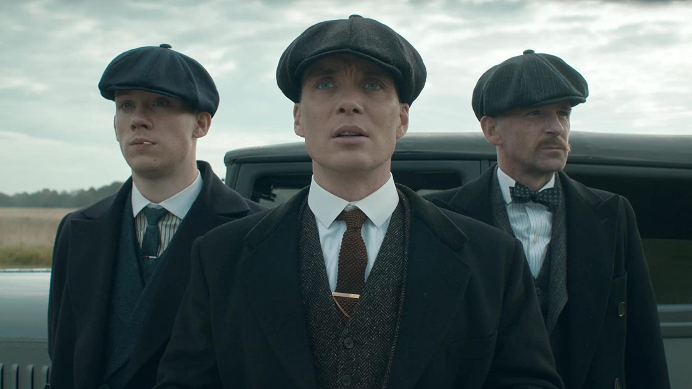
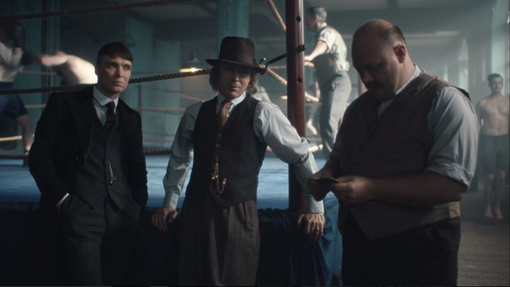
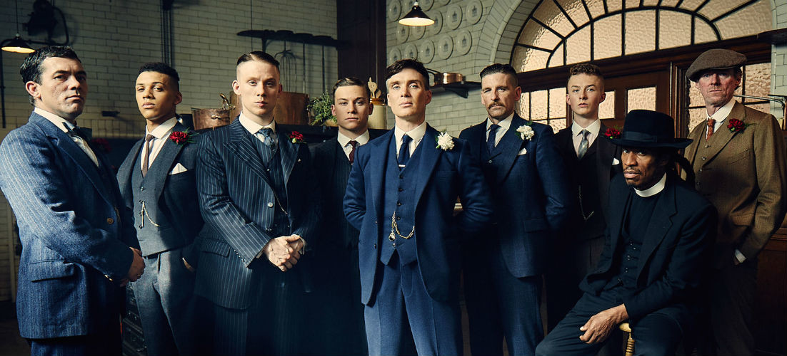

TEMPORADAS
Peaky Blinders está compuesta por 6 temporadas, con un total de 36 episodios emitidos entre 2013 y 2022. Cada temporada tiene 6 capítulos y sigue una estructura narrativa intensa, con un arco argumental cerrado pero conectado con la evolución general de la familia Shelby y su ascenso en el mundo criminal y político.
Temporada 1 (2013 – 6 episodios)
Ambientada en 1919, introduce a la familia Shelby, dueños de las apuestas ilegales en Birmingham. Thomas Shelby busca expandir su poder, pero se enfrenta a la policía enviada desde Belfast y a sus propios demonios tras la guerra. La temporada marca el inicio del enfrentamiento entre los Peaky Blinders y el inspector Chester Campbell.
Temporada 2 (2014 – 6 episodios)
El clan Shelby se expande hacia Londres, enfrentándose a nuevas organizaciones criminales y mafias más poderosas. Se profundizan los conflictos familiares y los intereses románticos de Thomas, mientras el poder de la banda empieza a consolidarse a nivel nacional.
Temporada 3 (2016 – 6 episodios)
La trama se internacionaliza: Thomas entra en contacto con organizaciones rusas y revolucionarias, lo que lo involucra en un juego político mucho más complejo. La temporada explora la ambición desmedida de Tommy y cómo esto empieza a afectar sus relaciones personales y familiares.
Temporada 4 (2017 – 6 episodios)
La mafia italiana llega a Birmingham con intenciones de destruir a los Shelby. Tras un intento de exterminar a toda la familia, Thomas y sus hermanos deben unirse nuevamente para sobrevivir. Esta temporada es de las más intensas, con fuertes dosis de acción, violencia y venganzas personales.
Temporada 5 (2019 – 6 episodios)
Ambientada en 1929, justo después del crack de Wall Street. Thomas Shelby ya es un político miembro del Parlamento, pero enfrenta la amenaza del auge del fascismo en Inglaterra, encarnado en la figura de Oswald Mosley. Esta temporada marca un cambio de enfoque, llevando la historia hacia un terreno más político e ideológico.
Temporada 6 (2022 – 6 episodios)
Es la última temporada de la serie. La narrativa se vuelve más oscura, mostrando las consecuencias del poder, las pérdidas personales y el declive de los Shelby. Thomas enfrenta traiciones, enemigos externos y una lucha interna con su salud y su legado. Esta temporada cierra la trama televisiva, dejando abierta la puerta para la película que continuará la historia.

Próxima entrega
El creador Steven Knight confirmó que la serie no tendrá una séptima temporada, pero la historia de los Shelby no terminó en televisión: se está desarrollando una película de Peaky Blinders que servirá como desenlace definitivo. La producción estará a cargo de la BBC en conjunto con Netflix. El rodaje comenzó en 2024 y el estreno está previsto para 2025. Steven Knight adelantó que la película cerrará la historia de Thomas Shelby en el contexto de la Segunda Guerra Mundial.